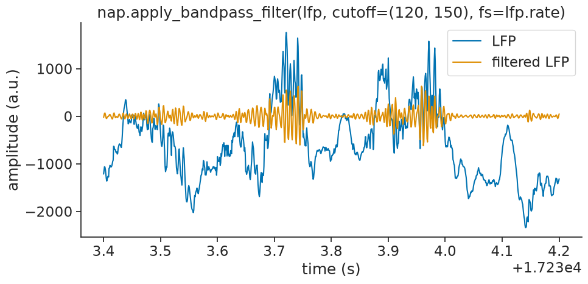
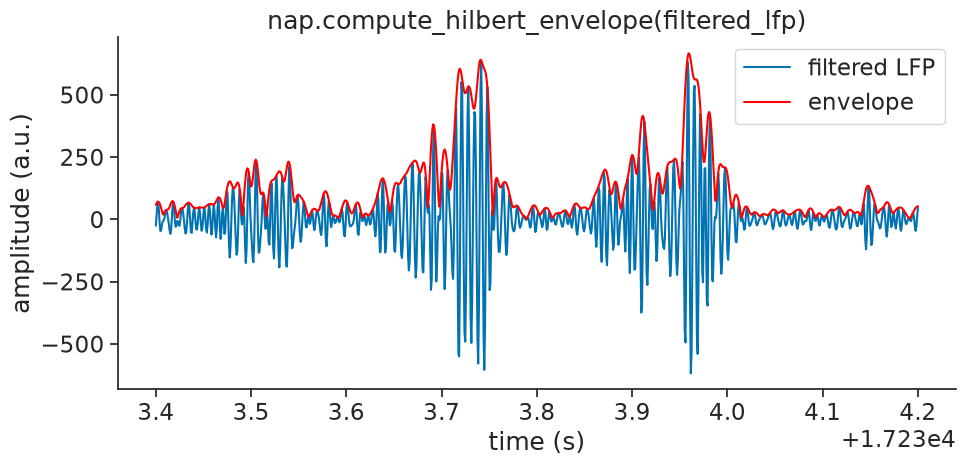
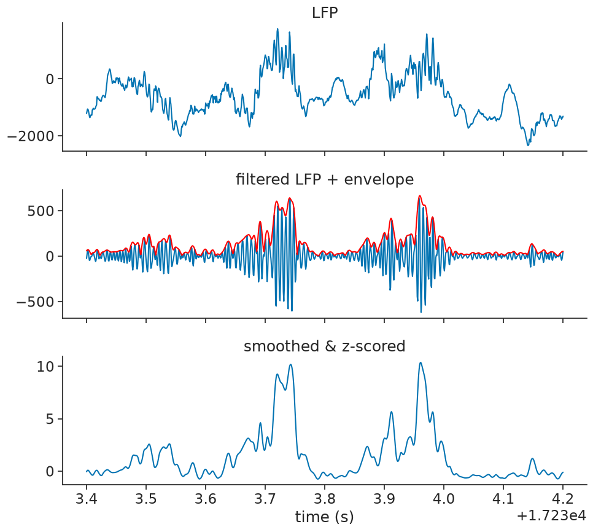
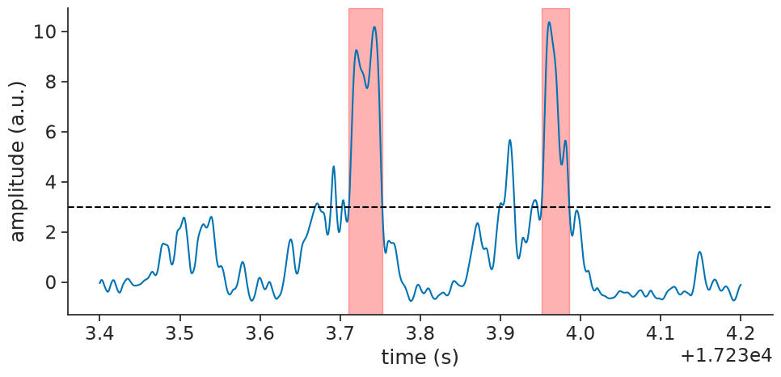

Detecting sharp-wave ripples#
This tutorial demonstrates how to use Pynapple to detect sharp-wave ripples.
Downloading the data#
We will examine the dataset from Grosmark & Buzsáki (2016). Let’s download the data and save it locally:
path = "Achilles_10252013_EEG.nwb"
if path not in os.listdir("."):
r = requests.get(f"https://osf.io/2dfvp/download", stream=True)
block_size = 1024 * 1024
with open(path, "wb") as f:
for data in r.iter_content(block_size):
f.write(data)
data = nap.load_file(path)
data
Achilles_10252013_EEG
┍━━━━━━━━━━━━━┯━━━━━━━━━━━━━┑
│ Keys │ Type │
┝━━━━━━━━━━━━━┿━━━━━━━━━━━━━┥
│ units │ TsGroup │
│ rem │ IntervalSet │
│ nrem │ IntervalSet │
│ forward_ep │ IntervalSet │
│ eeg │ TsdFrame │
│ theta_phase │ Tsd │
│ position │ Tsd │
┕━━━━━━━━━━━━━┷━━━━━━━━━━━━━┙
We only need to local field potential (LFP), which has been downsampled to 1250Hz:
lfp = data["eeg"][:, 0]
lfp
Time (s)
---------- ----
12679.5 -258
12679.5008 -341
12679.5016 -355
12679.5024 -379
12679.5032 -364
12679.504 -406
12679.5048 -508
...
25546.9696 2035
25546.9704 2021
25546.9712 2023
25546.972 1906
25546.9728 1848
25546.9736 1862
25546.9744 1976
dtype: int16, shape: (16084344,)
lfp.rate
np.float64(1250.0000777153286)
Frequency filtering#
To look for ripples we will only keep frequencies within 120 to 250Hz:
filtered_lfp = nap.apply_bandpass_filter(lfp, cutoff=(120, 250), fs=lfp.rate)
filtered_lfp
Time (s)
---------- ---
12679.5 0
12679.5008 -40
12679.5016 -44
12679.5024 -13
12679.5032 22
12679.504 33
12679.5048 19
...
25546.9696 57
25546.9704 81
25546.9712 49
25546.972 -29
25546.9728 -95
25546.9736 -90
25546.9744 -16
dtype: int16, shape: (16084344,)

Hilbert transform: computing the envelope#
Now, we will apply the Hilbert transform to the filtered LFP and take its absolute value
to extract the amplitude envelope, which reflects ripple strength over time.
Pynapple provides compute_hilbert_envelope:
envelope = nap.compute_hilbert_envelope(filtered_lfp)
envelope
Time (s)
---------- ---------
12679.5 3.00686
12679.5008 40.3712
12679.5016 54.7394
12679.5024 55.3081
12679.5032 47.6888
12679.504 34.8182
12679.5048 22.0093
...
25546.9696 65.9358
25546.9704 84.1077
25546.9712 101.346
25546.972 110.556
25546.9728 110.843
25546.9736 94.404
25546.9744 51.4788
dtype: float64, shape: (16084344,)
See scipy.signal.hilbert for
more information on what the Hilbert transform does!
We will plot the envelope over the filtered signal for visual confirmation:

Smooth and Z-score#
We will then smooth and z-score the envelope:
smoothing_bins = 10
window = np.ones(smoothing_bins) / smoothing_bins
smoothed = envelope.convolve(window)
zscored_smoothed = (smoothed - smoothed.mean()) / smoothed.std()
Let’s visualize everything up until now as an overview:

Ripple detection#
We detect ripple events by thresholding the z-scored smoothed signal with a threshold of 3 standard deviations. We further filter detected events to keep only those between 30ms and 300ms in duration, typical for hippocampal ripples. We lastly merge events that are closer to each other than 20ms, as they are likely to be the same ripple.
threshold = 3
ripple_events = zscored_smoothed.threshold(threshold, method="above")
ripple_epochs = ripple_events.time_support
ripple_epochs = ripple_epochs.drop_short_intervals(0.03, time_units="s")
ripple_epochs = ripple_epochs.drop_long_intervals(0.3, time_units="s")
ripple_epochs = ripple_epochs.merge_close_intervals(0.02, time_units="s")
ripple_epochs.intersect(segment)
index start end
0 17233.7 17233.8
1 17234 17234
shape: (2, 2), time unit: sec.
Finally, we can plot the detected ripple events on top of the filtered LFP signal for visual confirmation:

Using detect_oscillatory_events#
For your convenience, we put the entire process into a single
function called detect_oscillatory_events.
To get it to work nicely, you will have to the tune the following detection parameters:
frequency band: the band of frequencies you are interested in
threshold band: minimum and maximum thresholds to apply to the z-scored envelope of the squared signal
duration band: minimum and maximum duration of the events
minimum interval between events
ripple_epochs = nap.detect_oscillatory_events(
data=lfp,
epochs=lfp.time_support,
frequency_band=(120, 250),
threshold_band=(3, 15),
duration_band=(0.03, 0.3),
min_interval=0.02,
sliding_window_size=smoothing_bins
)
ripple_epochs.intersect(segment)
index start end power amplitude peak_time
0 17233.7 17233.8 54.28 641.17 17233.7
1 17234 17234 53.48 666.65 17234
shape: (2, 2), time unit: sec.
You can see that this gives the same result as before:
Authors
Guillaume Viejo